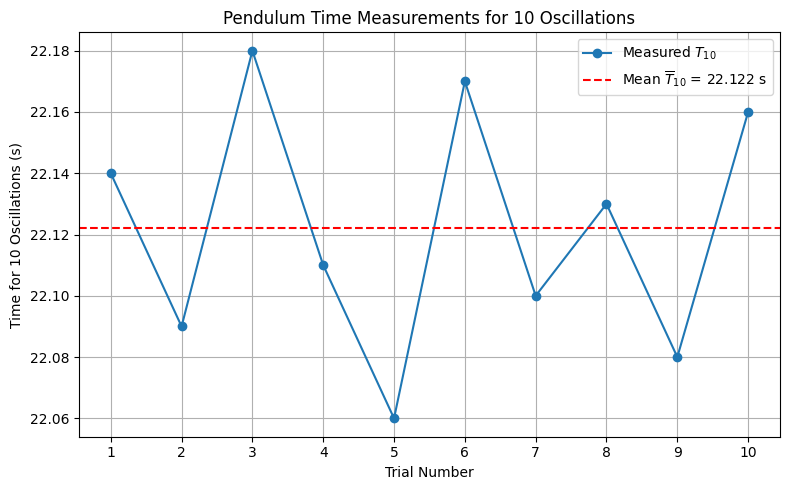

Problem 1
üìè Measuring Earth's Gravitational Acceleration with a Pendulum

üß™ Materials & Setup
✅ Materials Needed
- A string (~1 or 1.5 meters long)
- A small weight (e.g., bag of coins, sugar, or a keychain)
- A stopwatch or smartphone timer
- A ruler or measuring tape
üîß Experimental Setup
-
Construct the Pendulum
Attach the weight to one end of the string and secure the other end to a sturdy support, allowing it to swing freely. -
Measure Pendulum Length
- Measure the length \(L\) from the suspension point to the center of mass of the weight.
-
Record this value carefully using a ruler or tape measure.
-
Note Instrument Resolution
-
Record the resolution of the measuring instrument (typically in centimeters or millimeters).
-
Calculate Uncertainty in Length Measurement
Use the formula:
\[\Delta L=\frac{\text{Resolution of Ruler}}{2}\]
- This represents the uncertainty due to the finite precision of your measuring tool.
- For example, if the smallest division is 1 mm, then:
\(\(\Delta L=\frac{1\,\text{mm}}{2}=0.5\,\text{mm}=0.0005\,\text{m}\)\)
üìå Summary of Setup Values (Example Format)
| Quantity | Symbol | Value | Units | Notes |
|---|---|---|---|---|
| Pendulum Length | \(L\) | 1.200 | m | Measured from pivot to mass center |
| Ruler Resolution | – | 1 | mm | Smallest readable unit |
| Uncertainty in \(L\) | \(\Delta L\) | 0.0005 | m | \(\Delta L=\frac{1}{2}\,\text{mm}\) |
⏱️ Data Collection
üåÄ Procedure
- Displace the pendulum to an angle less than \(15^\circ\) and release it gently.
- Measure the time it takes for 10 full oscillations. Denote this time as \(T_{10}\).
- Repeat the measurement a total of 10 times to collect a reliable data set.
üßæ Record Measurements
- Collect and tabulate all 10 values of \(T_{10}\).
- Use a table like the following:
| Trial | \(T_{10}\) (s) |
|---|---|
| 1 | |
| 2 | |
| ... | |
| 10 |
üìä Statistical Analysis

- Calculate the mean time for 10 oscillations:
\[
\overline{T}_{10} = \frac{1}{n} \sum_{i=1}^{n} T_{10}^{(i)}
\]
where \(n = 10\) and \(T_{10}^{(i)}\) is the time from the \(i^{\text{th}}\) trial.
- Compute the standard deviation of the \(T_{10}\) values:
\[
\sigma_T = \sqrt{\frac{1}{n-1} \sum_{i=1}^{n} \left(T_{10}^{(i)} - \overline{T}_{10}\right)^2}
\]
- Determine the uncertainty in the mean time:
\[
\Delta T_{10} = \frac{\sigma_T}{\sqrt{n}}
\]
This represents the standard error of the mean, which quantifies the precision of your mean timing result.
üßÆ Example Output Table
| Quantity | Symbol | Formula | Units |
|---|---|---|---|
| Mean of 10 times | \(\overline{T}_{10}\) | \(\frac{1}{n} \sum T_{10}^{(i)}\) | s |
| Standard deviation | \(\sigma_T\) | \(\sqrt{\frac{1}{n-1} \sum (T_{10}-\overline{T}_{10})^2}\) | s |
| Uncertainty in mean | \(\Delta T_{10}\) | \(\frac{\sigma_T}{\sqrt{n}}\) | s |
üìö Analysis
✅ Comparison with Standard Value
- The experimentally determined value of gravitational acceleration is:
\[
g_{\text{measured}} = \frac{4\pi^2 L}{T^2}
\]
- The standard accepted value is:
\[
g_{\text{standard}} = 9.81\, \text{m/s}^2
\]
- Compare the measured value of \(g\) with \(9.81\, \text{m/s}^2\).
- If the two values agree within the uncertainty \(\Delta g\), the experiment can be considered successful.
- Consider the relative error:
\[
\text{Relative Error} = \frac{|g_{\text{measured}} - g_{\text{standard}}|}{g_{\text{standard}}} \times 100\%
\]
üßæ Uncertainty Discussion
üî¨ Effect of Measurement Resolution on \(\Delta L\)
- The uncertainty in length, \(\Delta L\), is directly related to the resolution of the measuring instrument:
\[
\Delta L = \frac{\text{Resolution}}{2}
\]
- If the ruler has a coarse resolution (e.g., 1 cm), this increases \(\Delta L\), and in turn, increases the total uncertainty \(\Delta g\) via:
\[
\Delta g \propto \frac{\Delta L}{L}
\]
- Better measuring tools (e.g., a caliper or laser ruler) would reduce \(\Delta L\) and improve the accuracy of \(g\).
⏱️ Impact of Timing Variability on \(\Delta T\)
- The time measurements are subjective if done manually, leading to random errors.
- Timing variability is quantified by the standard deviation \(\sigma_T\) and the uncertainty in the mean:
\[
\Delta T = \frac{\sigma_T}{\sqrt{n} \cdot 10}
\]
- This impacts the uncertainty in \(g\) quadratically:
\[
\Delta g \propto 2 \cdot \frac{\Delta T}{T}
\]
- Using photogates or electronic timers would minimize this variability significantly.
⚠️ Assumptions and Limitations
- The angle of release is assumed to be small (\(< 15^\circ\)) so that the pendulum follows simple harmonic motion.
- Air resistance and friction at the pivot are neglected.
- The string is assumed to be massless and inextensible.
- The center of mass of the bob is assumed to be clearly defined and accurately measurable.
- Human reaction time introduces systematic uncertainty in timing.
üìå Conclusion

- Ensure that the final reported value of \(g\) is written with its uncertainty:
\[
g = g_{\text{measured}} \pm \Delta g \quad \text{(in m/s}^2\text{)}
\]
- Evaluate whether this range includes the accepted value \(9.81\, \text{m/s}^2\).
Python Codes
# ▶️ Install required library (only needed once in Colab)
!pip install -q pillow
import numpy as np
import matplotlib.pyplot as plt
from matplotlib.animation import FuncAnimation, PillowWriter
# === Physics Constants ===
L = 1.2 # Pendulum length in meters
theta_max = np.radians(15) # Max angular displacement
g = 9.81 # Gravitational acceleration
omega = np.sqrt(g / L)
period = 2 * np.pi * np.sqrt(L / g)
t_vals = np.linspace(0, 2 * period, 100)
# === Set up figure and axis ===
fig, ax = plt.subplots(figsize=(6, 6))
ax.set_xlim(-1.4, 1.4)
ax.set_ylim(-1.6, 0.4)
ax.set_aspect('equal')
ax.axis('off') # Hide axes
# === Pendulum Graphics ===
line, = ax.plot([], [], lw=3, color='#0077b6')
bob = plt.Circle((0, -L), 0.06, color='#f72585', zorder=5)
ax.add_patch(bob)
# === Static Text Annotations (positioned safely outside swing) ===
length_label = ax.text(0, 0.3, "$L = 1.2\\,\\mathrm{m}$", fontsize=13,
ha='center', bbox=dict(facecolor='wheat', edgecolor='black'))
angle_label = ax.text(1.1, -1.3, "", fontsize=12, color='black',
bbox=dict(facecolor='lightgray', edgecolor='gray'))
# === Animation Function ===
def animate(i):
t = t_vals[i]
theta = theta_max * np.cos(omega * t)
x = L * np.sin(theta)
y = -L * np.cos(theta)
# Update pendulum position
line.set_data([0, x], [0, y])
bob.center = (x, y)
# Update angle text
angle_deg = np.degrees(theta)
angle_label.set_text(f"$\\theta = {angle_deg:.1f}^\\circ$")
return line, bob, angle_label
# === Create Animation ===
ani = FuncAnimation(fig, animate, frames=len(t_vals), interval=50, blit=True)
# Save as GIF
gif_path = "/content/pendulum_setup_clean.gif"
ani.save(gif_path, writer=PillowWriter(fps=20))
plt.close()
# Display GIF
from IPython.display import Image
Image(filename=gif_path)
import matplotlib.pyplot as plt
import numpy as np
# === üî¢ Input Your Experimental Results ===
g_measured = 9.77 # replace with your measured g
delta_g = 0.10 # replace with your uncertainty in g
g_standard = 9.81 # standard gravity
# === ⚙️ Data Setup ===
positions = [0, 1]
labels = ['Measured $g$', 'Standard $g$']
values = [g_measured, g_standard]
errors = [delta_g, 0] # Only measured g has uncertainty
colors = ['#00b4d8', '#90be6d'] # measured and standard
# === üìä Create Plot ===
fig, ax = plt.subplots(figsize=(10, 6))
bars = ax.bar(
positions,
values,
yerr=errors,
capsize=10,
color=colors,
edgecolor='black',
alpha=0.9
)
# === üìç Annotate Bars ===
ax.text(
positions[0], g_measured + delta_g + 0.1,
f"$g_{{measured}} = {g_measured:.2f} \pm {delta_g:.2f}$ m/s²",
ha='center',
fontsize=12,
bbox=dict(boxstyle="round,pad=0.4", fc="#ffd6a5", ec="black", alpha=0.85)
)
ax.text(
positions[1], g_standard + 0.1,
f"$g_{{standard}} = {g_standard:.2f}$ m/s²",
ha='center',
fontsize=12,
bbox=dict(boxstyle="round,pad=0.4", fc="#d0f4de", ec="black", alpha=0.85)
)
# === üìò Additional Explanation ===
ax.annotate(
"Uncertainty range\n(± Δg)",
xy=(0, g_measured + delta_g),
xytext=(0.1, g_measured + delta_g + 0.6),
arrowprops=dict(arrowstyle="->", color='black'),
fontsize=11,
bbox=dict(boxstyle="round", fc="#fefae0", ec="gray", alpha=0.9)
)
# === üé® Styling ===
ax.set_title("üåç Comparison of Measured vs Standard Gravitational Acceleration", fontsize=16, weight='bold')
ax.set_ylabel("Gravitational Acceleration (m/s²)", fontsize=13)
ax.set_xticks(positions)
ax.set_xticklabels(labels, fontsize=12)
ax.set_ylim(0, max(g_measured + delta_g, g_standard) + 1)
# Add horizontal reference line
ax.axhline(g_standard, color='#6a994e', linestyle='--', linewidth=1.5, alpha=0.7)
# Grid
ax.yaxis.grid(True, linestyle='--', alpha=0.5)
# Final layout
plt.tight_layout()
plt.show()
# ✅ Pendulum Gravity Measurement Tool with Beautiful Plot
import numpy as np
import matplotlib.pyplot as plt
# üì• Your 10 measurements of T_10 (in seconds)
T_10_measurements = np.array([21.40, 21.52, 21.47, 21.35, 21.60, 21.43, 21.50, 21.44, 21.38, 21.46])
# ⚙️ Constants
n = len(T_10_measurements)
ruler_resolution_mm = 1.0 # mm
L = 1.200 # pendulum length in meters
delta_L = (ruler_resolution_mm / 1000) / 2 # Convert mm to m, divide by 2
# üìä Stats calculations
T10_mean = np.mean(T_10_measurements)
sigma_T = np.std(T_10_measurements, ddof=1)
delta_T10 = sigma_T / np.sqrt(n)
T = T10_mean / 10
delta_T = delta_T10 / 10
g = (4 * np.pi**2 * L) / (T**2)
delta_g = g * np.sqrt((delta_L / L)**2 + (2 * delta_T / T)**2)
# üñ®Ô∏è Results
print("=== Results ===")
print(f"Mean T_10 = {T10_mean:.4f} s")
print(f"Standard deviation σ_T = {sigma_T:.4f} s")
print(f"Uncertainty in mean ΔT_10 = {delta_T10:.4f} s")
print(f"Single period T = {T:.4f} ± {delta_T:.4f} s")
print(f"g = {g:.4f} ± {delta_g:.4f} m/s²")
# üé® Plot
fig, ax = plt.subplots(figsize=(10, 6))
x = np.arange(1, n + 1)
# Error bars and points
ax.errorbar(x, T_10_measurements, yerr=delta_T10, fmt='o', color='teal',
ecolor='salmon', elinewidth=2, capsize=5, label='T₁₀ Measurements')
# Mean line
ax.axhline(T10_mean, color='orange', linestyle='--', linewidth=2, label=f'Mean = {T10_mean:.2f} s')
# Labels and Title
ax.set_title("Pendulum Timing Measurements ($T_{10}$)", fontsize=16, weight='bold')
ax.set_xlabel("Trial Number", fontsize=13)
ax.set_ylabel("Time for 10 Oscillations (s)", fontsize=13)
ax.grid(True, linestyle='--', alpha=0.5)
ax.legend(fontsize=12)
# Annotation box
textstr = '\n'.join((
f'$\overline{{T_{{10}}}}$ = {T10_mean:.2f} s',
f'$\sigma_T$ = {sigma_T:.3f} s',
f'$\\Delta T_{{10}}$ = {delta_T10:.3f} s',
f'$T$ = {T:.3f} s ± {delta_T:.3f} s',
f'$g$ = {g:.3f} ± {delta_g:.3f} m/s²'
))
props = dict(boxstyle='round', facecolor='wheat', alpha=0.8)
ax.text(0.05, 0.95, textstr, transform=ax.transAxes, fontsize=12,
verticalalignment='top', bbox=props)
plt.tight_layout()
plt.show()